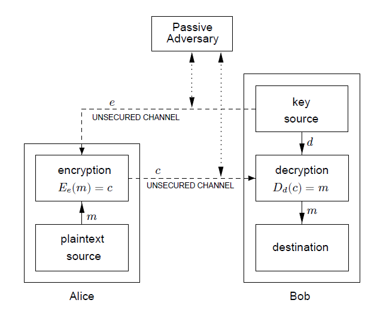

Section 7.2 The RSA system
¶First let us recap what public key encryption entails. Let \(\{ E_e : e \in \mathcal{K} \}\) be a set of encryption transformations, and let \(\{ D_d : d \in \mathcal{K} \}\)$ be the set of corresponding decryption transformations, where \(\mathcal{K}\) is the key space. Consider any pair of associated encryption/decryption transformations \((E_e , D_d)\) and suppose that each pair has the property that knowing \(E_e\) it is computationally infeasible, given a random ciphertext \(c \in \mathcal{C}\text{,}\) to find the message \(m \in \mathcal{M}\) such that \(E_e(m) = c\text{.}\) This property implies that given \(e\) (the public key) it is infeasible to determine the corresponding decryption key \(d\) (the private key).

The RSA cryptosystem was invented in 1977 by Ronald Rivest, Adi Shamir, and Leonard Adleman of the Massachusetts Institute of Technology in the USA. The RSA cryptosysytem is one of the most popular public key encryption schemes in use and is based on the integer factorization problem and Fermat's Little Theorem.
The integer factorization problem is the following:
Given a positive integer \(n\text{,}\) find its prime factorization; that is, write
where the \(p_i\) are pairwise distinct primes and each \(e_i \geq 1\text{.}\)
RSA setup:
- Alice generates two random primes \(p\) and \(q\text{.}\)
- In the ring \(\mathbf{Z}_n\) where \(n=pq\text{,}\) Alice selects integers \(e\) and \(d\) satisfying \(ed = 1 \bmod \phi(n)\text{.}\)
- Note that \(\phi(n)=(p-1)(q-1)\text{.}\)
- The public key is the pair \((e,n)\text{.}\)
- The private key is \(d\text{,}\) or alternatively the tuple \((d, p, q)\text{.}\)
RSA encryption:
To encrypt a message \(0< m < n\) to Alice, any party computes ciphertext \(c\) as follows and sends \(c\) to Alice.
RSA decryption:
Alice recovers the message \(m\) from the ciphertext \(c\) using the private key as follows.
We now show that the RSA system will always decrypt to the sent message.
Theorem 7.2.2.
Let \(n=pq\) for primes \(p\) and \(q\text{,}\) and let \(ed=1\pmod{\phi(n)}\text{.}\) If \(c=m^e\pmod n\text{,}\) then \(c^d=m\) for any \(m\in \mathbf{Z}_n\text{.}\)Proof.
First note that \(c^d=m^{ed} \pmod n\text{.}\) Since \(ed=1\pmod{\phi(n)}\text{,}\) it follows that \(ed-1=i\phi(n)\) for some integer \(i\text{.}\) Therefore \(c^d=m^{i\phi(n)+1} \pmod n\text{.}\)
From Theorem 7.1.1 it follows that if \(m\) and \(p\) are relatively prime, then \(m^{p-1}=1\pmod p\) and since \(p-1\) is a factor of \(\phi(n)\)
It now follows that \(m^{i\phi(n)+1} =m\pmod p\text{.}\)
If \(p\) is a factor of \(m\text{,}\) then \(m=kp\) for some integer \(k\) and it follows that \(m^{i\phi(n)+1} =0=m\pmod p\text{.}\)
In both cases \(m^{i\phi(n)+1} =m\pmod p\text{.}\)
By repeating this arguement with \(q\) instead of \(p\text{,}\) it follows that \(m^{i\phi(n)+1} =m\pmod q\text{.}\)
Since \(p\) and \(q\) are prime, it follows that \(m^{i\phi(n)+1} =m\pmod {pq}=m\pmod n\text{.}\)
Example 7.2.3. RSA encryption.
Consider the RSA cryptosystem with modulus \(n=31 \cdot 43 = 1333\text{.}\)- Take \(e \in \{854, 953 \}\text{.}\) Which value is suitable for the public encryption exponent \(e\text{?}\) Explain.
- Compute the private decryption exponent \(d\) using a suitable \(e\) from above.
- Encrypt the message \(m=38\text{.}\)
- Decrypt the ciphertext \(c=1002\text{.}\)
-
\(\phi(n)=30\times 42=1260\)
For \(e\) to be a suitable choice it must be invertible modulo \(\phi(n)\text{,}\) that is \(GCD(e,\phi(n))=1\text{.}\)
Since \(\text{GCD}(854,1260)\geq 2\) and \(\text{GCD}(953,1260)=1\text{,}\) let \(e=953\text{.}\)
-
Since \(ed\equiv 1\pmod{\phi(n)}\text{,}\) we make use of the extended Euclidean Algorithm to find \(d\text{.}\) Note that \(\phi(n)=30\times 42=1260\text{.}\)
\(i\) \(q_i\) \(r_i\) \(x_i\) \(y_i\) \(0\) \(1260\) \(1\) \(0\) \(1\) \(953\) \(0\) \(1\) \(2\) \(1\) \(307\) \(1\) \(-1\) \(3\) \(3\) \(32\) \(-3\) \(4\) \(4\) \(9\) \(19\) \(28\) \(-37\) \(5\) \(1\) \(13\) \(-31\) \(41\) \(6\) \(1\) \(6\) \(59\) \(-78\) \(7\) \(2\) \(1\) \(-149\) \(197\) \(8\) \(6\) \(0\) \(953\) \(-1260\) Hence \(d=197\text{.}\)
-
\(e \) \(b\) \(r\) \(953\) \(38\) \(1\) \(476\) \(111\) \(38\) \(238\) \(324\) \(38\) \(119\) \(1002\) \(38\) \(59\) \(255\) \(752\) \(29\) \(1041\) \(1141\) \(14\) \(1285\) \(78\) \(7\) \(971\) \(78\) \(3\) \(410\) \(1090\) \(1\) \(142\) \(345\) \(0\) \(169\) \(1002\) Hence \(c=38^{953}=1002 \pmod{1333}\text{.}\)
-
\(e \) \(b\) \(r\) \(197\) \(1002\) \(1\) \(98\) \(255\) \(1002\) \(49\) \(1041\) \(1002\) \(24\) \(1285\) \(676\) \(12\) \(971\) \(676\) \(6\) \(410\) \(676\) \(3\) \(142\) \(676\) \(1\) \(169\) \(16\) \(0\) \(568\) \(38\) Hence \(m=1002^{197}=38 \pmod{1333}\text{.}\)